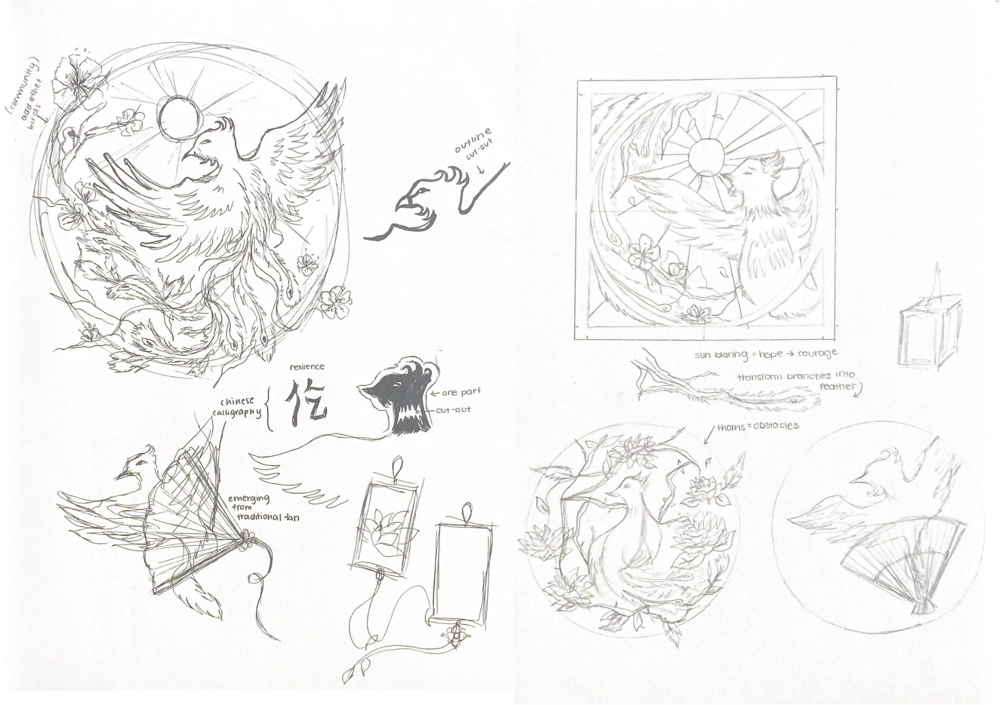
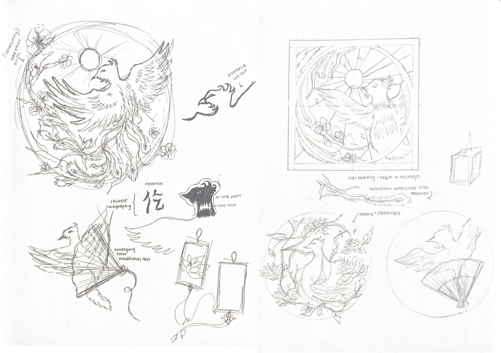

Standing in the Doorway

Overview
In commemoration for the 100th anniversary of the Chinese Exclusion Act, the Markham Museum held an exhibition, titled, “Standing in the Doorway: Lived Histories and Experiences of the Chinese Community” to highlight Chinese culture, histories and immigration to York Region in Canada.
Students from Bur Oak Secondary School, led by Martha Griffith, the Art Department Head, designed and assembled a tapestry, named “Resilience: Unfazed”. The exhibit piece consists of two laser cut tapestries that are over 40 feet long in length. The tapestries consist of differing panels, each creatively representing the perseverance of Chinese communities. As a student, I got the opportunity to design my own panel and assemble every student’s panel into a cohesive tapestry layout to be printed.
York Region District School Board - Standing in The Doorway: Introduction - Home. Place. Belonging.
Process
Beginning with sketches, I brainstormed different interpretations of resilience, landing on the Chinese mythical creature, the Phoenix. I experimented with pairing the creature with cherry blossoms, fans, branches, and fire to identify the strongest composition.
 

Results
After selection, my design was successfully printed on a large-scale, and sprayed with glue to adhere to the base tapestry. My panel is titled, “Unfazed”.

Sentesaurs Card Game Mockup

© 2025 Alisa Tran. All rights reserved.